结合Plotly和Seaborn的可视化功能，设计多种类型的图表（如柱状图、折线图、散点图、热力图等），以直观的方式展示电影评分数据的分布、趋势和关联性。通过动态交互功能，用户可以更深入地探索数据。
 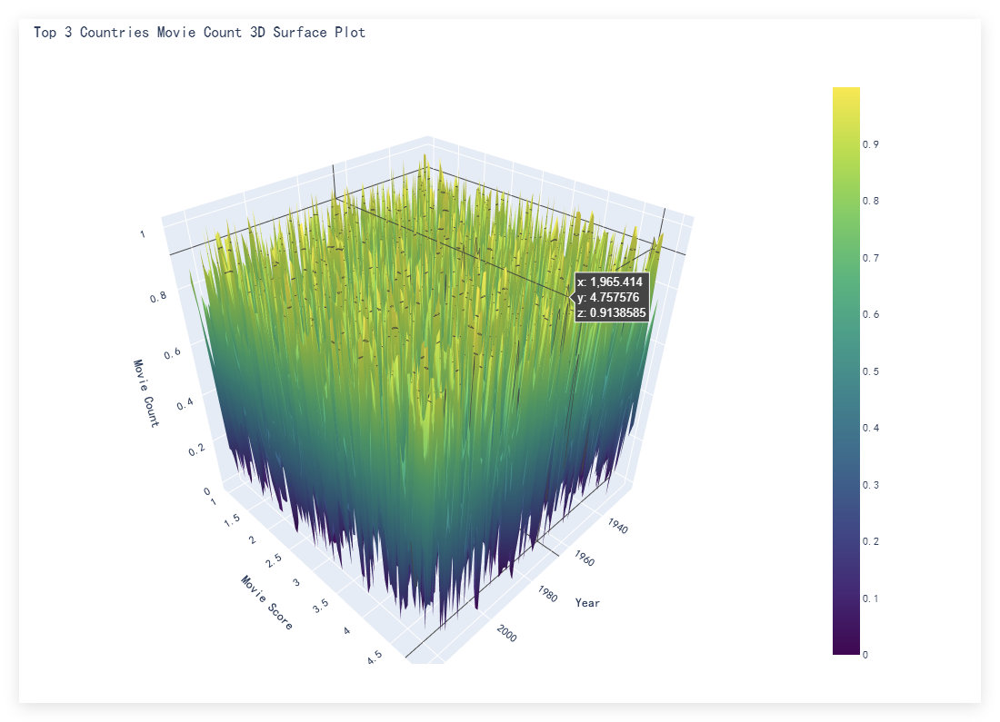
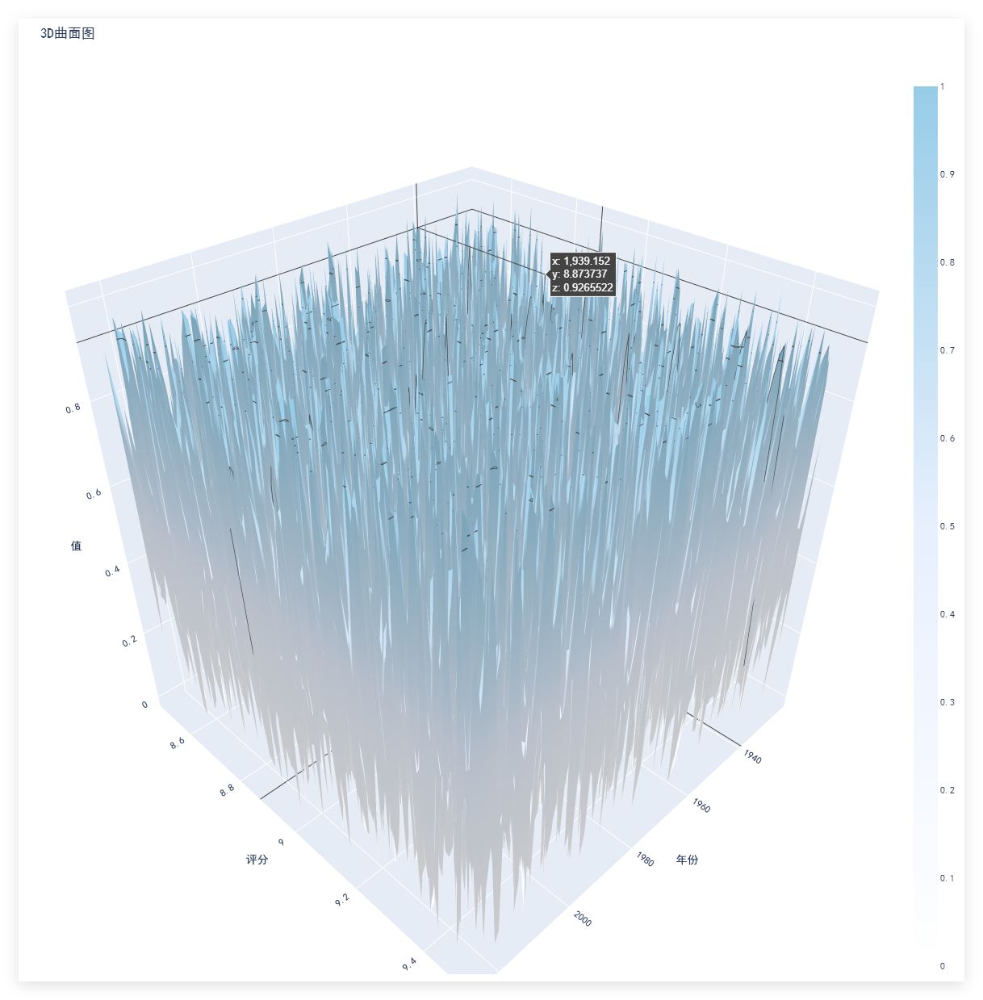
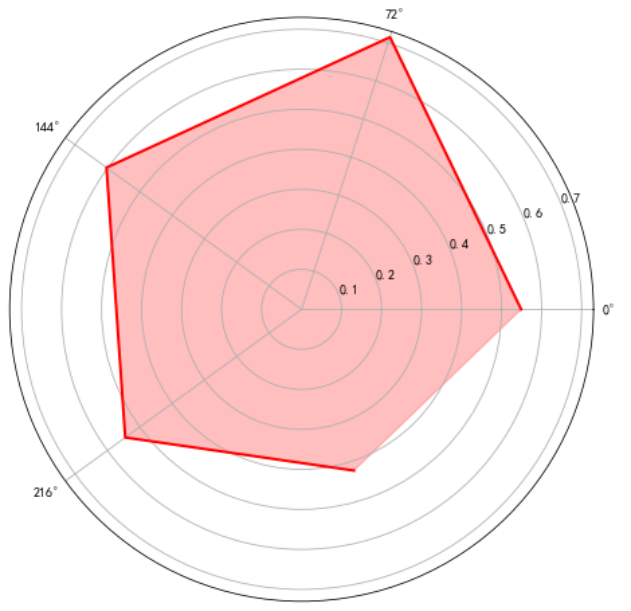
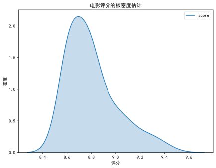
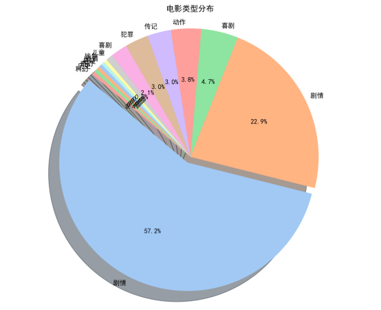
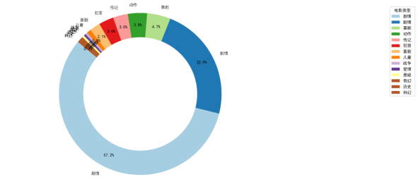
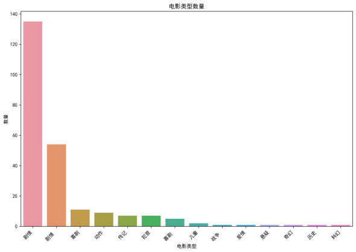
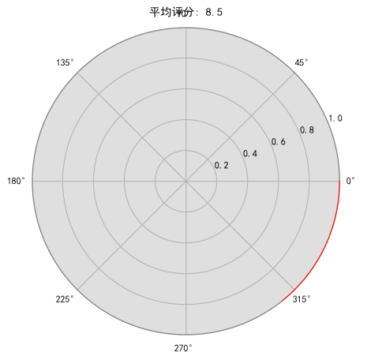
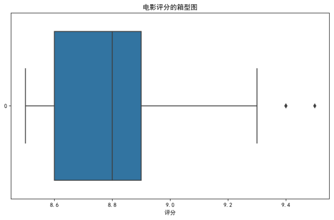
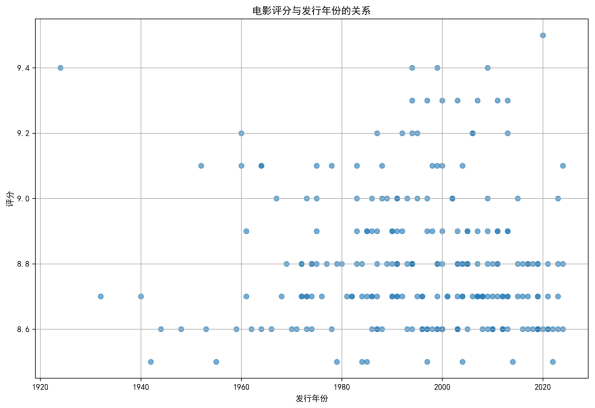
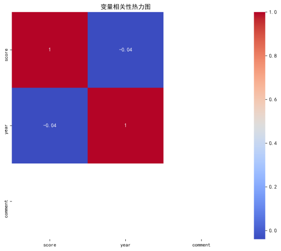
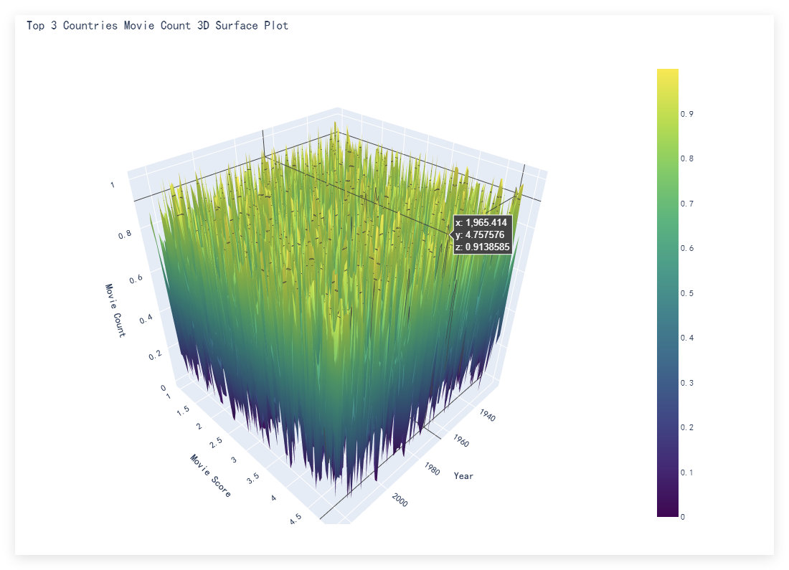
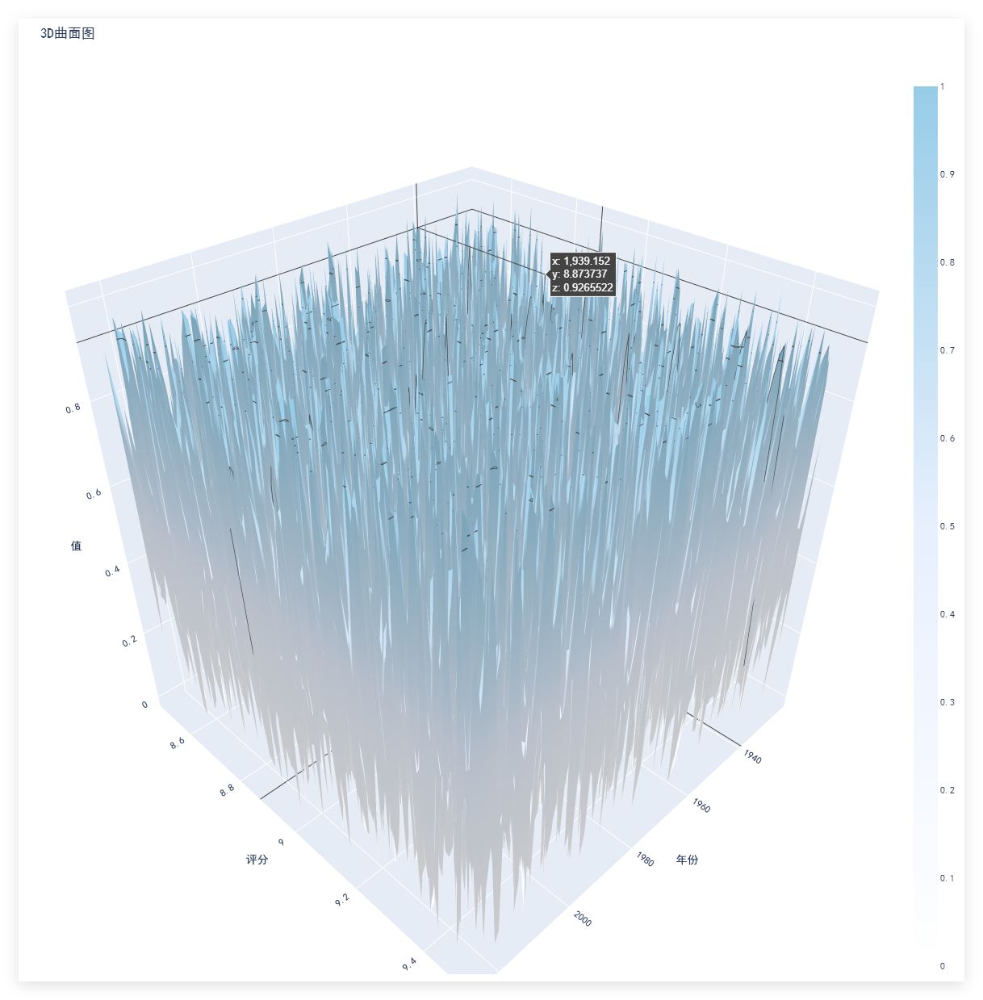
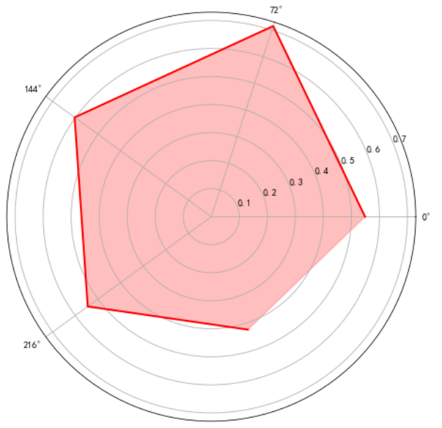
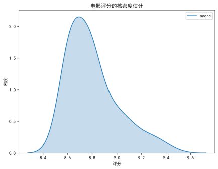
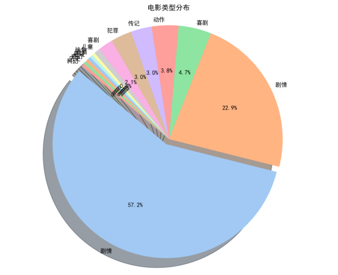
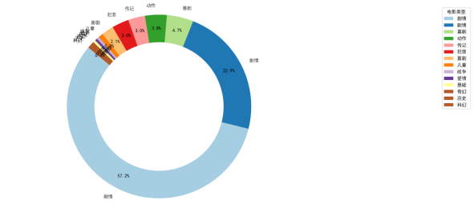
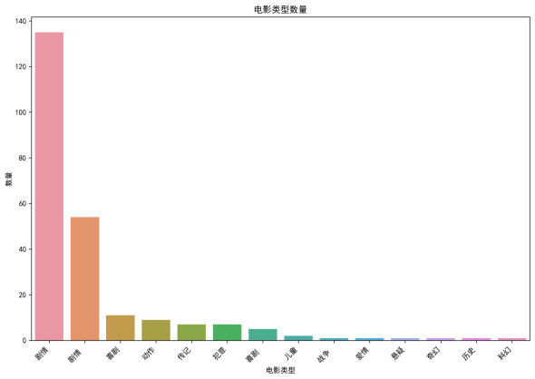
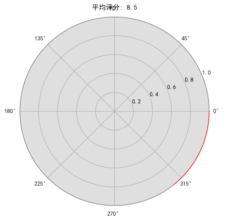
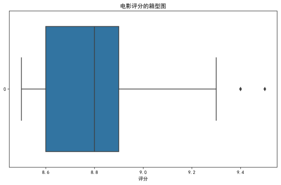
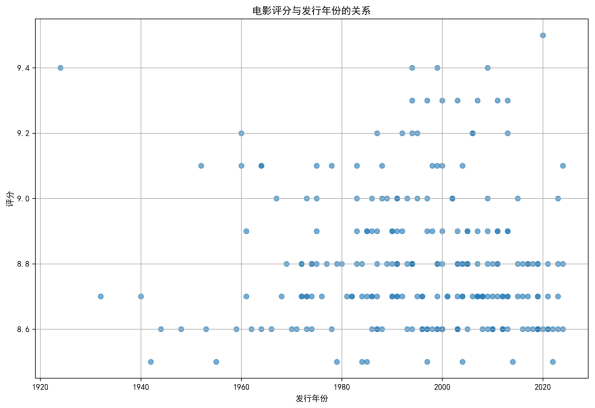
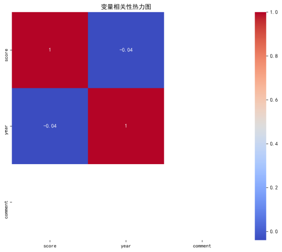
一、数据爬取
框架与工具
采用Scrapy 框架搭建爬虫系统，结合 BeautifulSoup 库（BS 库） 解析 HTML 页面，实现对豆瓣高分电影榜数据的定向抓取。为模拟真实用户行为、绕过反爬机制，集成以下组件：
RandomUserAgentMiddleware：随机切换请求头中的 User-Agent，避免 IP 被封禁。
SeleniumMiddleware：使用 Edge 浏览器的无界面模式（Headless）渲染动态页面，通过 JavaScript 执行反反爬操作（如隐藏navigator.webdriver特征），并模拟随机滚动和等待时间，降低被识别为爬虫的风险。
数据来源与爬取逻辑
目标网址：https://www.douban.com/doulist/782551/（豆瓣高分电影榜列表页）。
解析规则：通过 CSS 选择器.doulist-item定位电影条目，提取字段包括电影名称、评分、类型、制片国家 / 地区、年份、评语、链接。
翻页机制：递归解析页面底部 "下一页" 链接（span.next a::attr(href)），直至无更多数据。
反爬与稳定性优化
降低请求频率：设置CONCURRENT_REQUESTS=1（单线程请求）和DOWNLOAD_DELAY=5（5 秒间隔），避免对目标服务器造成压力。
重试机制：对返回状态码为 403/404/500 等错误的请求自动重试 5 次，确保数据完整性。
日志记录：启用 DEBUG 级别日志，保存至spider.log，便于追踪爬取过程中的异常。
二、数据清洗与处理
工具与环境
使用Pandas 库在 Jupyter Notebook 中完成数据清洗，主要步骤包括：
缺失值处理：通过df.dropna()删除包含缺失值的行，对可填充字段（如部分统计值）使用df.fillna(0)填充。
数据类型转换：将 "年份" 字段从字符串转换为整数类型，"评分" 字段转换为浮点型，便于后续分析。
去重与验证：利用df.drop_duplicates()剔除重复记录，确保最终数据集（237 部电影）无冗余。
关键函数与检查
数据预览：通过print(df.head())查看前 5 条记录，确认字段提取正确性。
数据统计：使用print(df.info())和print(df.describe())检查数据类型分布、缺失值数量及数值型字段的统计特征（如评分均值、年份范围等）。
三、数据可视化
工具与库
Matplotlib：绘制基础统计图表（如直方图、散点图），通过SimHei字体支持中文显示。
Seaborn：生成热力图（sns.heatmap），可视化年份与评分的相关性矩阵。
Plotly：创建 3D 可交互图表（如 3D 曲面图、散点图 HTML 文件），支持动态缩放和数据探索。
WordCloud：生成词云图，直观展示制片国家 / 地区的出现频率。
关键图表实现
电影类型分布（饼图）：通过df['movie_type'].value_counts().plot(kind='pie')计算各类型占比，设置autopct='%1.1f%%'显示百分比。
年份与评分相关性（散点图 + 回归分析）：使用sns.regplot绘制趋势线，观察评分随年份变化的模式。
地区词云图：基于country字段生成词云，通过font_path='simhei.ttf'解决中文乱码问题，词频越高的国家字体越大。
一、数据成果
数据集概况
最终数据集包含237 部高分电影（评分 8.6-9.7 分），覆盖字段：电影名称、类型、制片国家 / 地区、上映年份、评分、评语、链接。
数据存储格式：CSV 文件（movies.csv），支持后续二次分析与建模。
关键数据特征
类型分布：剧情类电影占比最高（57.2%），其次为喜剧（22.9%）、犯罪（4.7%）、传记（3.8%）等，反映观众对剧情驱动型内容的偏好。
地区分布：美国、日本、中国大陆的制片数量位列前三，苏联、伊朗、印度等国家的高分电影较少（词云图中字体较小）。
年份分布：高分电影主要集中在1990 年代至今，2020 年出现评分峰值（如《肖申克的救赎》等经典作品重映或重新评价），但 1920 年代亦有高分作品（如早期经典影片）。
二、可视化成果
基础统计图表
直方图：展示电影评分的分布区间，多数电影评分集中在 8.8-9.4 分之间，呈右偏态分布。
条形图：直观呈现各类型电影的数量差异，剧情类以绝对优势领先（约 135 部）。
饼图 / 环形图：清晰展示类型占比，剧情类占比超半数，喜剧类近四分之一。
相关性分析图表
散点图与热力图：年份与评分的相关性系数为 - 0.04（热力图显示弱负相关），表明电影评分与发行时间无显著线性关系，高分作品可能来自任何年代。
交互式与高级图表
3D 曲面图：模拟展示前三名国家（美国、日本、中国大陆）的电影数量随年份和评分的变化趋势（注：因原始数据未包含数量统计，图表使用随机数据演示结构）。
3D 散点图 HTML 文件：动态展示各国电影的年份、评分分布，支持按国家筛选数据，便于探索地区差异。
词云图
制片国家 / 地区词云图中，"美国""日本""中国大陆" 字体最大，"苏联""伊朗""印度" 等字体较小，印证高分电影在地区分布上的集中性。
三、分析结论与应用建议
核心结论
类型偏好：剧情 / 喜剧类电影最受青睐，建议创作者聚焦强叙事性内容。
时间趋势：90 年代以来电影产业快速发展，但高分作品不局限于特定年代，经典影片的长尾效应显著。
地区差异：美、日、中三国在高分电影市场占据主导，但不同地区观众可能对类型有细分需求（如欧洲观众可能更偏好艺术片）。
应用建议
推荐系统开发：基于用户对类型、地区、年份的偏好，构建个性化推荐模型，提升观影匹配效率。
内容创作方向：在巩固剧情 / 喜剧类型优势的同时，关注小众类型（如悬疑、历史）的市场潜力，推动题材多元化。
产业策略：应对线上娱乐竞争，需加强电影的独特体验（如技术创新、IP 衍生开发），提升观众观影意愿。
四、技术资产
代码与文件
爬虫代码（a2024list.spider.py）、数据处理脚本、可视化代码均保存于项目目录，支持复现分析流程。
生成的图表文件（PNG/HTML）与报告同路径存储，包括：bar_chart.png（条形图）、heatmap.png（热力图）、top_3_countries_movie_count_3d_surface.html（交互式 3D 图表）等。
可复用技术方案
集成 Selenium 与 Scrapy 的反爬爬虫架构，适用于动态渲染页面的数据采集。
基于 Pandas+Matplotlib/Seaborn 的标准化数据分析流程，可迁移至其他领域（如图书评分、产品评论分析）。